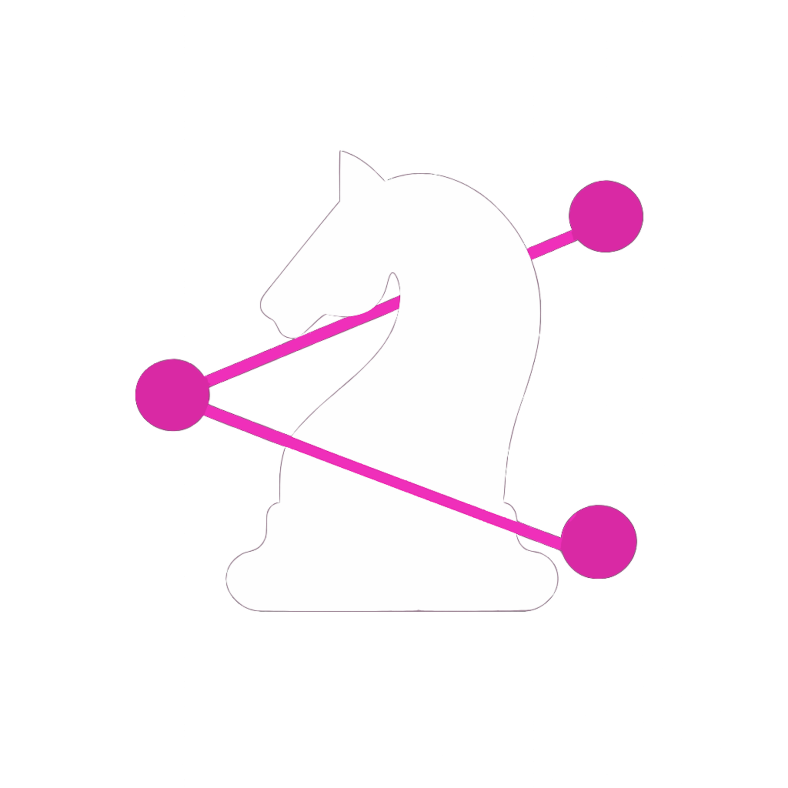

Exemplos
A pesquisa
Nossa pesquisa parte dos Problemas de Guarini, problemas matemáticos propostos em 1512 pelo matemático italiano Paolo Guarini di Forli, envolvendo a troca de posições entre cavalos em um tabuleiro.
A partir desse desafio, investigamos como encontrar o menor número possível de movimentos para realizar a troca. Para isso, utilizamos a Teoria dos Grafos, transformando cada casa do tabuleiro em um vértice e cada movimento possível do cavalo em uma aresta.
Com essa representação, analisamos os caminhos mínimos, os conflitos entre os movimentos e a paridade do tabuleiro para entender não apenas como encontrar uma solução, mas também como justificar que ela é a melhor possível.
Depois, aplicamos essa abordagem a um tabuleiro irregular, investigando como a mudança na estrutura das casas altera os caminhos e as possibilidades de movimento.
O Graphos nasceu dessa investigação para transformar esses conceitos em uma experiência visual e interativa, facilitando a exploração dos grafos e dos caminhos encontrados durante a pesquisa.